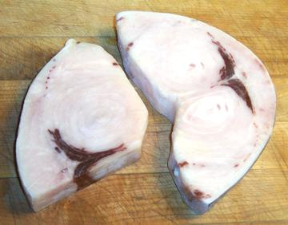

Swordfish are large, ferocious predatory fish that use their long sharp beak as a weapon to spear prey, which includes even Orcas, and to defend against Maco Sharks, the only predator big enough, fast enough and ferocious enough to take on a swordfish.
This is a worldwide fish, found in deep waters from the Arctic Circle to the Antarctic Circle. They grow to 14 feet and over 1000 pounds. Swordfish have scales, but not the kind that scrape off, so they are not kosher. IUCN Red List LC (Least Concern - 2011) in most regions. Photo by MathKnight distributed under license Creative Commons Attribution-ShareAlike v4.0 International.
More on Varieties of Fish
(very large page).

Swordfish flesh is firm and holds together very well during cooking. It
is a very large fish, so is generally cut into steaks, which are often
grilled. Mercury content is a concern and the FDA
recommends no more than one serving per week, and 1/4 that for pregnant
women. Because swordfish is not kosher, many restaurants serve
Mahi-Mahi instead, using similar
recipes.